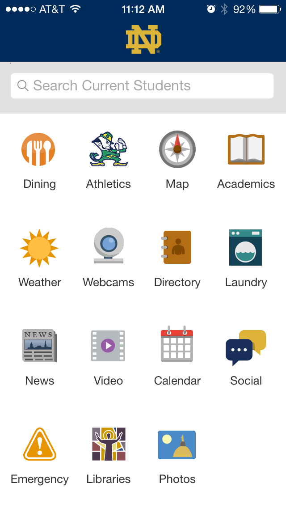
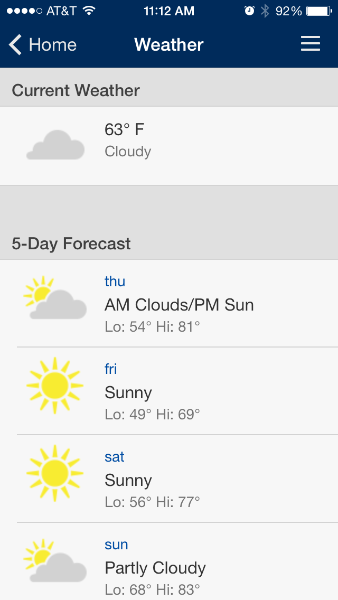
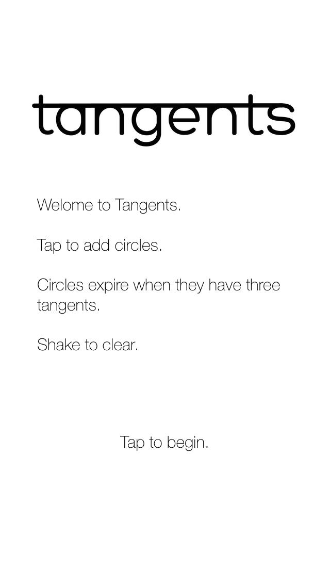
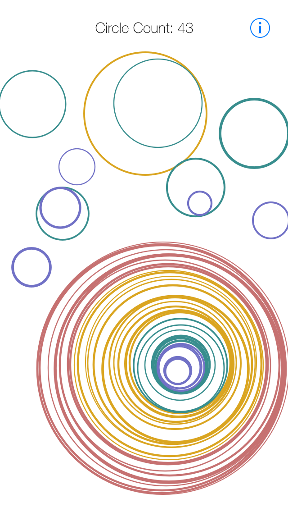
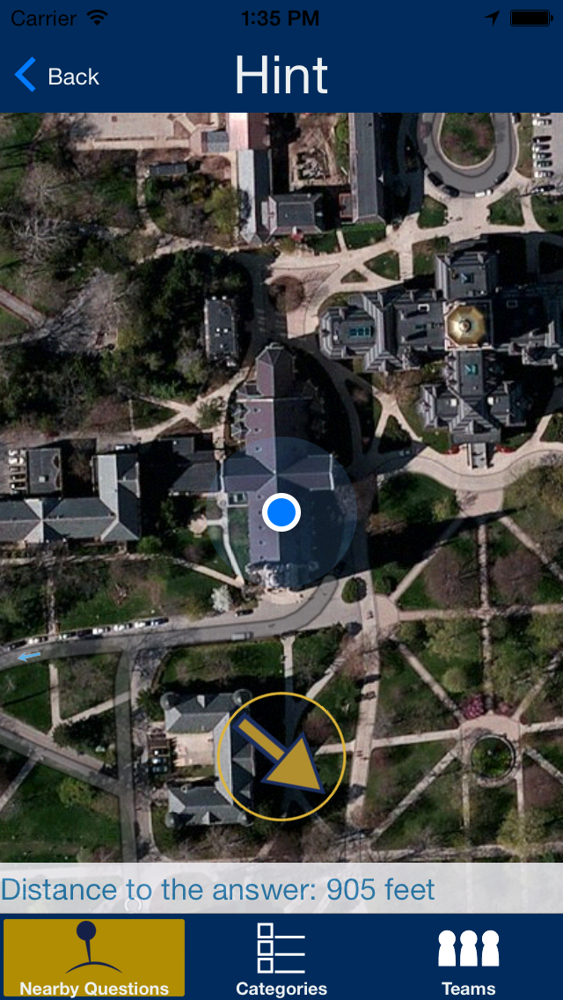
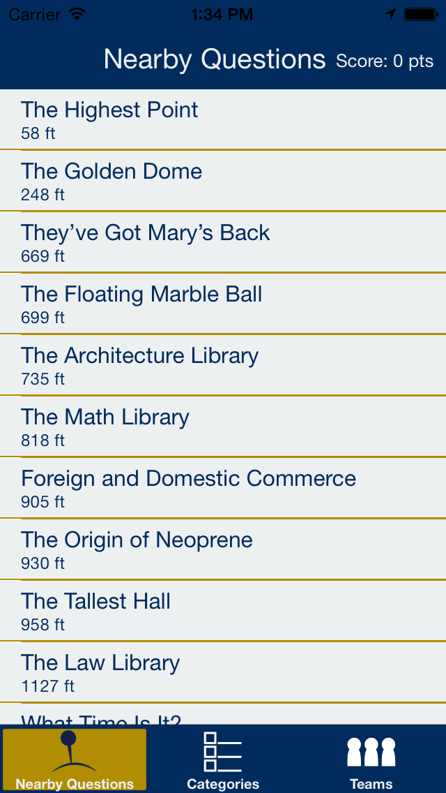

ND Mobile App
- About
- Notre Dame's redesigned mobile app, released in April 2014, was developed using the Kurogo mobile platform developed by Modo Labs. It features an reenvisioned user interface, new features, and parity across app and web.
- My Contributions
- I worked on the weather, OIT, Lab Finder, and Webcams modules. I worked on the modules at all stages of development, from conception, to code, to UI design, to beta testing.
- Availability
- Accessible via web at m.nd.edu or the App Store here.


Tangents
- About
- Conceived, designed, and developed during a 36-hour hackathon, Tangents is part game, part puzzle, part artistic experience. Players tap and drag to create expanding circles that change color and gently pulsate.
- My Contributions
- This app was my own creation. The gameplay and design are both original ideas that I implemented myself. I'm excited to continue expanding the app with the potential for levels, puzzles, and more modes!
- Availability
- Available this fall on the App Store!


OneParish
- About
- OneParish is a comprehensive digital solution for Catholic parishes. The product of tech startup Growing The Faith, OneParish has only been live for a few months but already promises to revolutionize the way parishes connect with their parishioners, providing services for managing directories, bulletins, donations, calendars, and more.
- My Contributions
- As a developer intern for Growing The Faith, I am working on a web interface for parishes to quickly and effortlessly process donations received by parishioners. Among other things, I developed an omnibox search bar allows users to search by name or envelop number, queries the parish's directory for that parishioner, and then pulls down the information needed to record that parishioner's donation.
- Availability
- Not available for general use, but a demo version will soon be available.
Scavenge ND
- About
- Scavenge ND was envisioned as a way for Notre Dame prospective and current students to learn more about campus through an interactive and engaging app. Users travel campus looking for locations that match questions, and receive points when they are nearby the question's answer. The app was commissioned by Notre Dame and was a precursor to their redesigned mobile app, which was released the following year.
- My Contributions
- I, along with a fellow classmate, developed the entire app during our freshman year at Notre Dame. It was my first experience developing an iOS app. I contributed the "hint" section as well as the "Nearby Questions" pane of the app. I also designed the icon.
- Availability
- Available on the App Store here.

